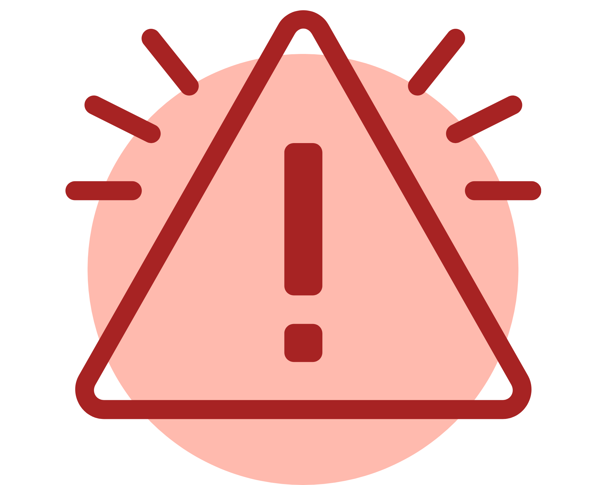

Risker i arbetsmiljön (AFS 2023:10)
I den nya regelstrukturen finns belastningsergonomi i kapitel 6 under Avdelning IV:
Hälsofarliga eller onödigt tröttande fysiska belastningar i AFS 2023:10 Risker i arbetsmiljön.
Där står bland annat att "Bestämmelserna i detta kapitel reglerar all verksamhet där arbetstagare
kan utsättas för belastningar eller andra förhållanden som, direkt eller indirekt, kan påverka
rörelseorganen eller stämbanden negativt".
Klicka på knappen nedan för att se kapitelindelningen i AFS 2023:10.
